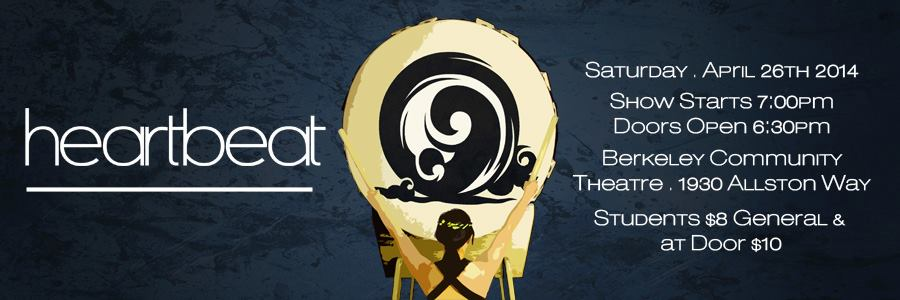

Welcome to Cal Raijin Taiko, the Japanese drumming group at the University of California, Berkeley!

Our showcase will take place on Saturday April 26th at 7PM, doors opening at 6:30PM. Our showcase will be at the Berkeley Community Theatre (1930 Allston Way, Berkeley, CA 94702), on the campus of Berkeley High School.
Tickets are now available! They are $8 for students and $10 for general and at the door. Please talk to current members about obtaining tickets. We are also tabling on Sproul. If you are not in the Berkeley area and would like a ticket, please contact caltaiko@gmail.com with your name, number of tickets (full or student price) and a contact email for confirmation.
Stay tuned for more information about guest performers and more!
See you there!
ASUC sponsored/ADA accessible